How to optimise CMS ecosystem for streamlining campaigns, enabling customization and data collection?
My Tasks: Product Design, User Research, UXUI design
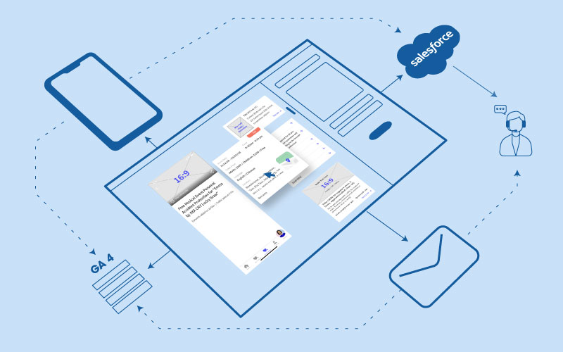
Project Background
As Emma expanded to onboard General Insurance users, we launched more promotional campaigns and introduced free hook products. However, the CMS (Content Management System) we were using at the time was shared with the Corporate website team, which had significant limitations:
- Making it difficult to personalize promotions for different customer groups.
- Relying on the workforce of the website team to launch the campaign.
- Low flexibility on the enhancement of the campaign’s templates.
We decided to build a brand new CMS for Emma by AXA app.
My Role
- Conducted user interviews to understand the business users’ expectations of the CMS, and studied clients’ unhappy experiences with our campaigns on the app.
- Designed the usage of the CMS.
- Designed the workflow of personalising the target group.
Collaboration teams
- Vicky Man (Business Analyst) — prepared business requirements & user stories
- Vincent Leung, Nelson Wong and team (Technical team) — conducted the proof of concept, studied the technical workflow of user group segmentation and Salesforce integration, developed the CMS and frontend templates
- Kara Wong and team (Data analytical team) — prepared a tracking plan for developing the campaign’s success metrics
Research
Topic: explore ways of enhancing our CMS functionalities for greater flexibility in launching timely market campaigns while reducing reliance on development teams for each campaign push.
Methodology
- Interview our stakeholders — to learn their difficulties with the old CMS, and understand their ideal way of selecting the target audience and current limitations.
- Interview the technical team to understand the existing process of grouping the target audience. In the Emma by AXA app, different types of policyholders can use the relevant policy features of their policy category. Since policyholders can purchase a new policy or withdraw their existing policy at any time, the feature list on the app's homepage should be updated whenever users log in.
Key stakeholders
- Senior Distribution Digital Support Manager
- Digital Customer Engagement Manager
- Data analytics & insights manager
- Business Analyst in charge of setting up the campaign
What We Found
High workload on setting up a single campaign
- A single template could not support bilingual language, so the business analyst needed to create double files for bilingual versions.
- If the business team selected multiple locations inside the app to promote a campaign (e.g. 4 locations), she should create 8 files to maintain one campaign — causing a high risk of file miss-update issues during approval.
- There was no complete testing environment for the business team to review campaign layout/content during approval. After sign-off, the business analyst needed to recreate the campaign in a live environment again — doubling the effort.
High dependence on the development team
- Controlling the visibility of ads on different pages of the app
- Setting the target audience
- Campaign launching time needs to stick with production release
The existing process of grouping the target audience
The campaign manager needed to ask the data science team to select target audiences by providing certain criteria, then pass the list of eligible policyholders to the development team, who enabled the campaign through a production release. This increased the difficulty of pushing timely campaigns to react to market trends.
Existing weakness of Salesforce
As real-time quota checking had not been reflected on the CMS, the BA needed to monitor the campaign quota in Salesforce at midnight if the event was popular. Prismic (the CMS front-end framework) couldn’t proactively check the Salesforce data, so it couldn’t check the campaign status when a user clicked on the campaign page.
Stakeholders’ Expectations of the New CMS
- Low dependency on the technical side
- Allows the launch of ads at any time
- High control over frequency of ad appearances, their locations, and the audience that can view them
- Allows users to modify content easily at any point
- Provides a safe content-reviewing and testing environment
- Allows quick withdrawal of ads in case of any emergency
Types of templates / advertisement locations
- Pop-up
- Pre-login page
- Ads on Homepage
- Ads in “My Privileges”
- Campaign details page
- Event forms
- Confirmation page
- Error page
- Terms and conditions page
- Quiz game journey
Solutions
To address this, I collaborated with the BA, IT, and Data teams to design a new CMS system from scratch.
Goals
The new system should support: customer segmentation, customizable ad placements, pre-integration with Salesforce, and high flexibility in campaign page design, supporting: free insurance product subscription, event subscription, quiz game journey, and service subscription. This reduced reliance on developers and made marketing campaigns more efficient and personalized.
Target Deliverables
- CMS dashboard design
- POC of new workflow for customer segmentation
- Solution for real-time quota
- Template designs for every advertisement location listed above
Ideal Workflow on Customer Segmentation
Set the target group through CMS. I wanted to allow users to define audience criteria in the CMS — campaign_id, group_id, age range, location, and line of business — converted into a JSON file and sent to the “Policy Lake” (fake name) to filter eligible policyholders. I suggested developing an API as a connector to read the JSON in the policy lake, believing this could be reusable for future automation processes.
The idea was doable but put on the wish list, because the API and technical teams gave reasonable reasons: the calculation cost associated with age combined with line of business is high, since the number of eligible audiences changes daily based on age — a dynamic criterion that significantly impacts subsequent analysis work. Switching from age ranges to birth year ranges could help, but if multiple campaigns run simultaneously, the eligibility checking process during login could become burdensome. Conclusion: this idea should be rethought together with login eligibility checking.
Journey of Real-time Quota
Digital enhancement: we added a webhook at the CMS to listen for the outbound message from Salesforce, and added a status validation when the app homepage loads. When the webhook received the outbound message asking to change the campaign status from “ON” to “OFF”, the status was reflected on the front-end layout.
Design Template
To prevent any misunderstanding by the development team regarding my design and content modelling structure, I provided not only the template layout but also detailed the content modelling structures, reusable slices, and configuration of those slices. This way, both the Business Analyst and I could understand how to use the CMS before development was completed, while the development team stood on the same page with us.
Reflection: Balancing Usability and Cost in CMS Design
During the process of designing the CMS, I had discussions with various departments. Through these conversations, I realized there were several areas where I needed to rethink how to create a cost-effective CMS.
Design Conflicts between BA and Developers
In the past, when designers worked on similar projects, clients often focused only on the layout design and overlooked the usability of the CMS. However, during this project, I noticed two key concerns repeatedly brought up by developers and business analysts (BAs):
Business Analysts (BA): “The previous CMS was so hard to use that it took ages just to create a post.”
Developers: “My biggest worry is building a completed function feature that ends up not being used.”
It became clear to me that when developers design features, they also consider the cost of development. Designing a well-rounded feature can be much more resource-intensive than we might imagine, so they naturally weigh whether it's worth the effort to fully implement a feature.
My Approach: Finding Common Ground
To address these challenges, the first step was to understand the future promotion plan from the customer engagement team. According to their plan, we prioritised designing the event page and refining the customer segmentation process — critical areas that directly impact the time and cost of launching a campaign. We also gave developers a clear understanding of the business needs, ensuring the features developed were both practical for end users and justified in terms of development cost.
My Learning
Looking back, this project taught me the importance of finding common ground between business goals and technical feasibility. By fostering collaboration and focusing on key pain points, I was able to guide the team toward a solution that balanced usability and cost-effectiveness. This experience has deepened my understanding of how thoughtful design and communication can drive successful outcomes.
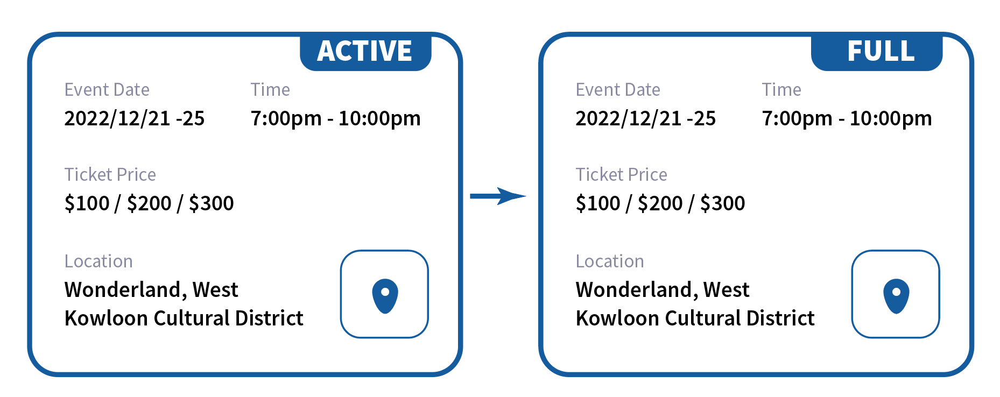
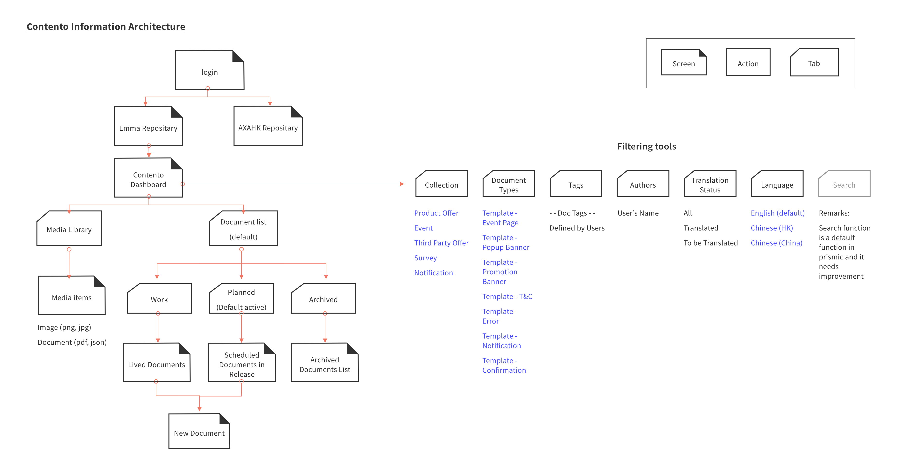
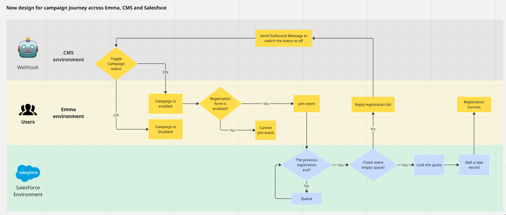
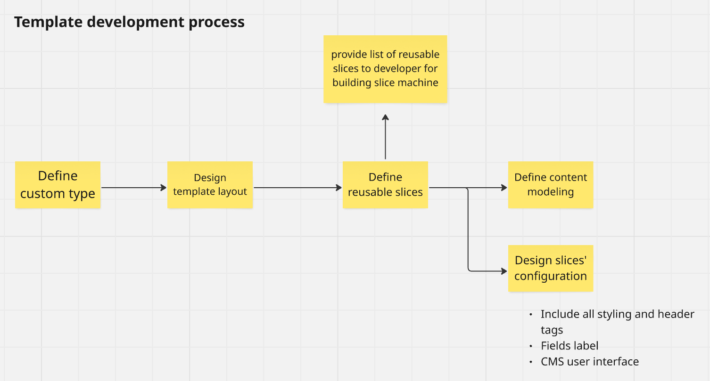
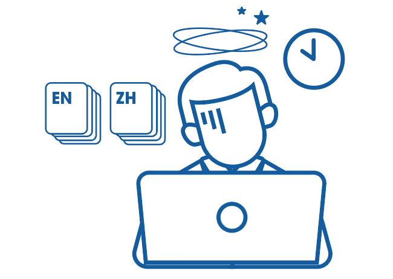
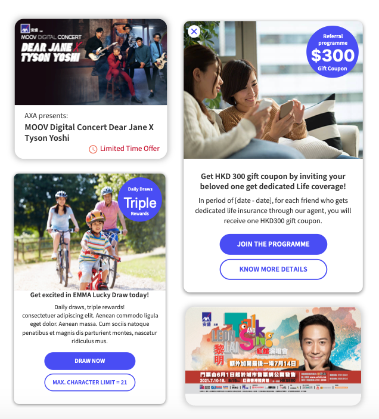
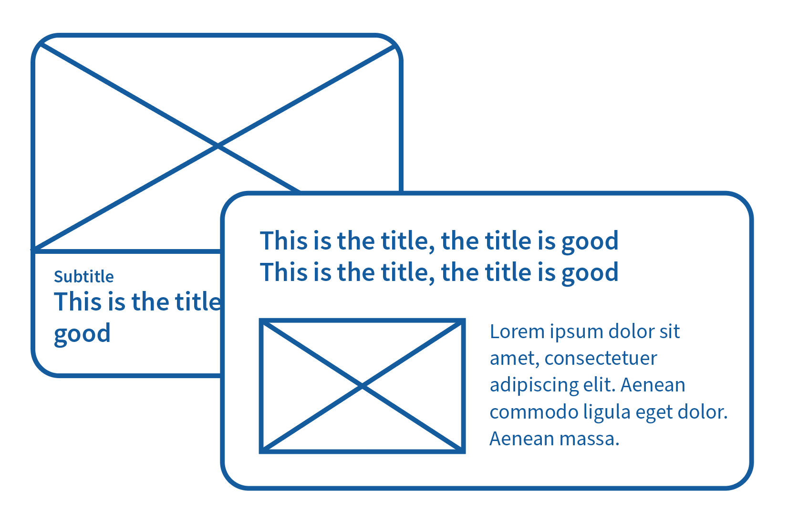
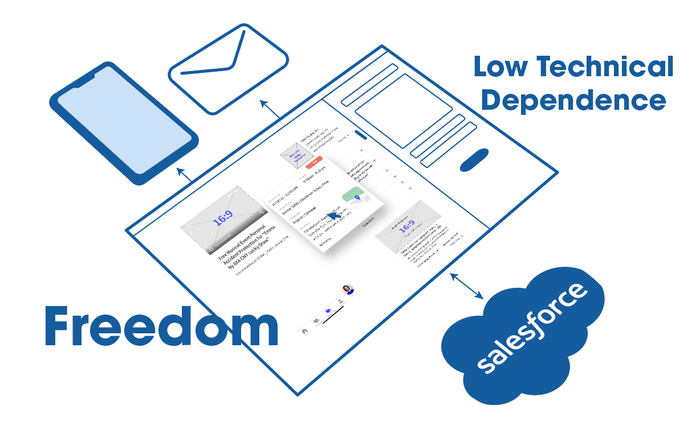
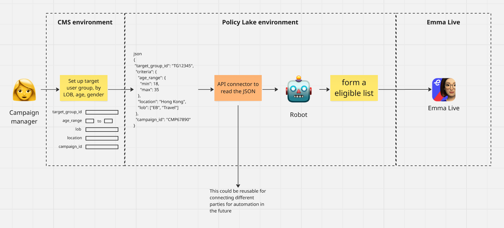
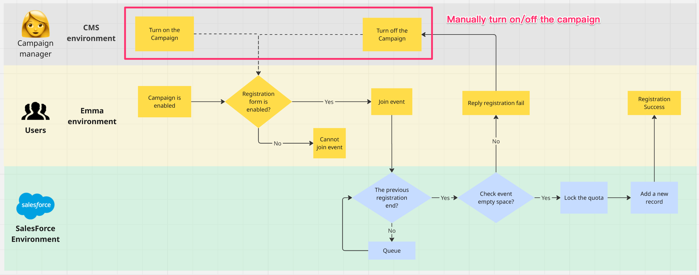
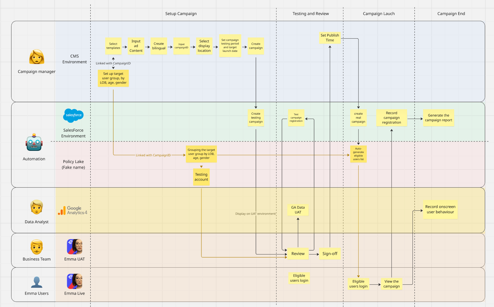